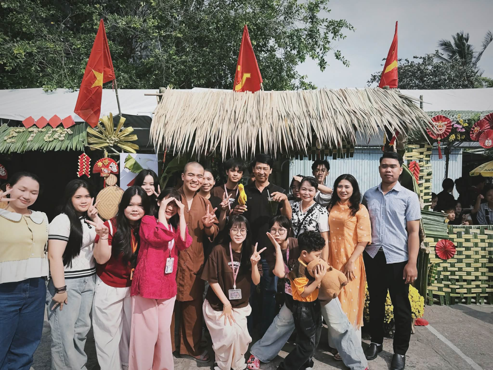
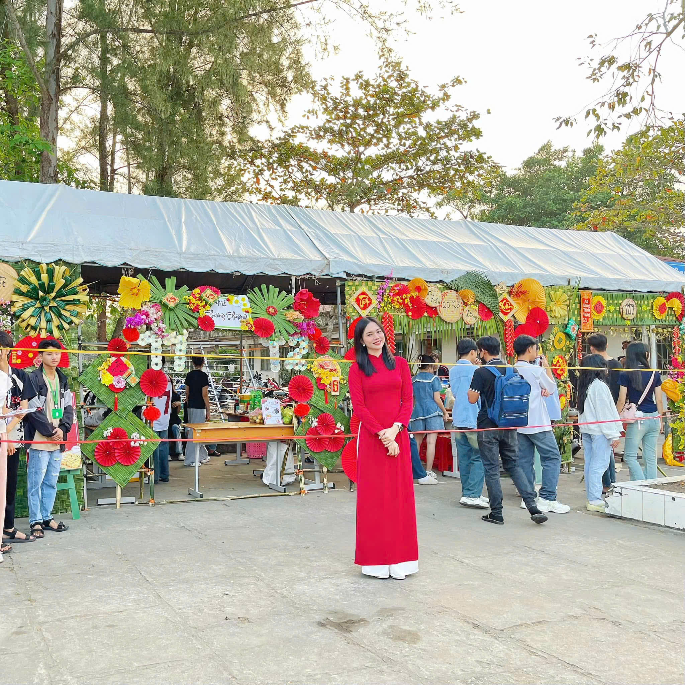
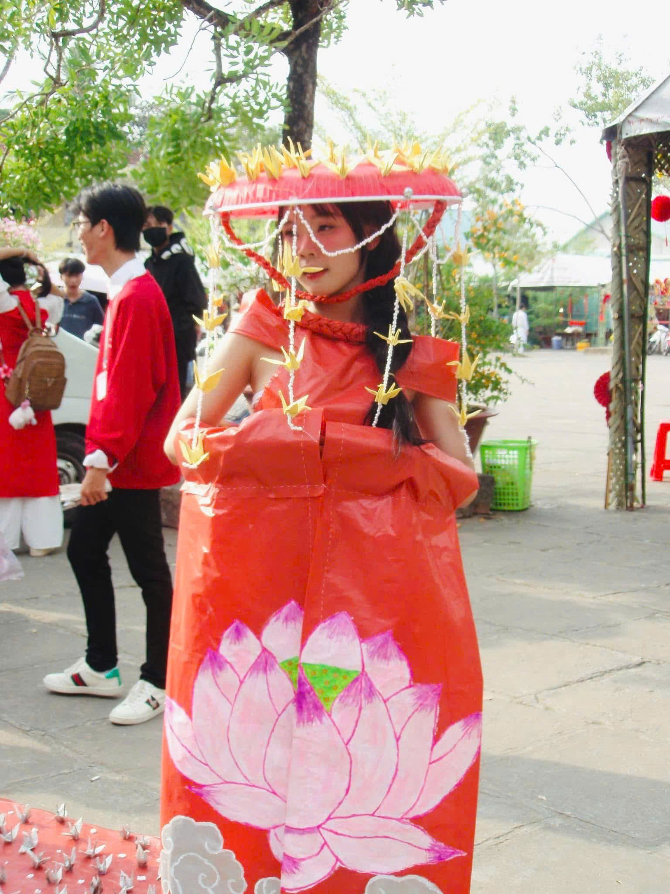
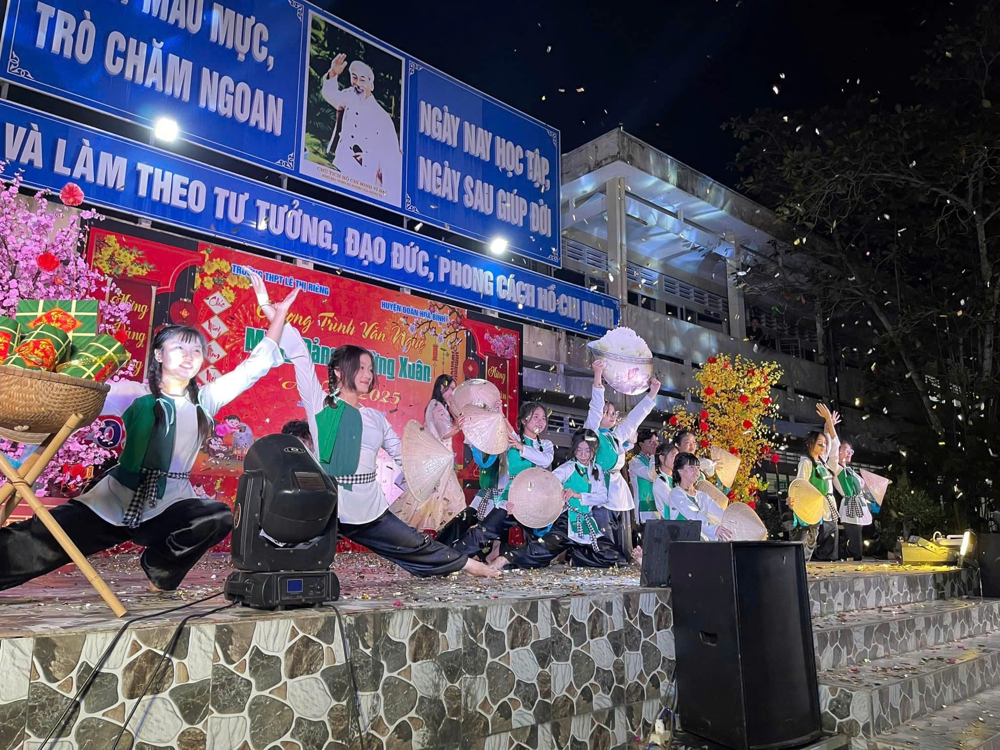
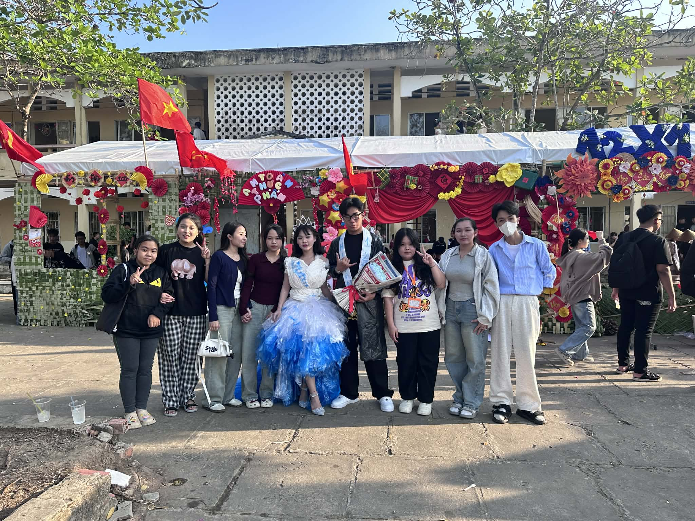
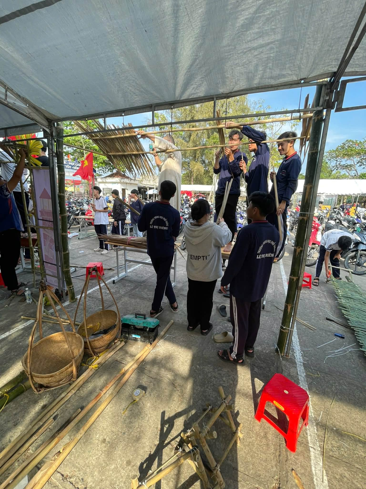
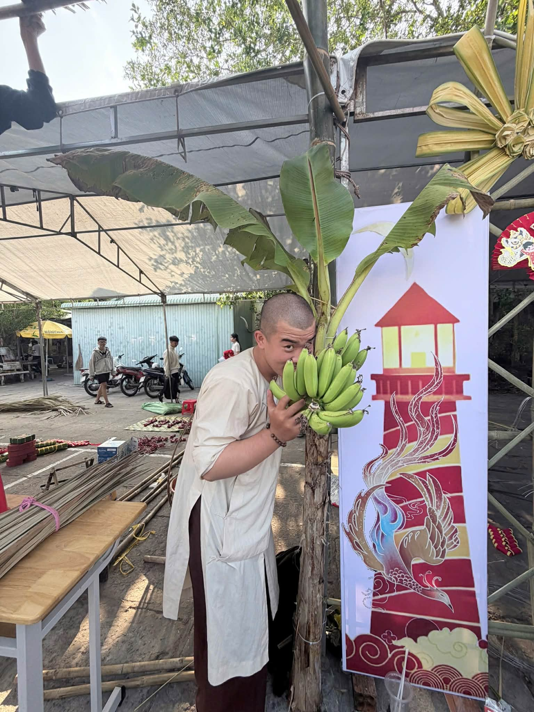

Kỷ Niệm Từ Gian Hàng Ẩm Thực
"Dù lớp không cùng một ý tưởng nhưng tất cả mọi người đều cố gắng lắng nghe ý kiến của nhau để tạo nên menu và quy trình chuẩn bị nấu vô cùng đáng nhớ đến từng khoảnh khắc."
Xuân về - Niềm vui đong đầy - Giữ gìn bản sắc văn hóa dân tộc
Mỗi độ Tết đến, xuân về, khắp mọi miền đất nước lại rộn ràng trong không khí náo nức của những ngày hội đầu năm. Hòa chung không khí ấy, trường THPT Lê Thị Riêng đã tổ chức Hội Xuân với nhiều hoạt động thú vị và ý nghĩa.
Mùa xuân không chỉ là thời điểm của sự khởi đầu, của niềm tin và hy vọng, mà còn là dịp để mọi người cùng nhau sum họp, chia sẻ niềm vui và gửi gắm những ước mơ tốt đẹp. Tết cổ truyền của dân tộc Việt Nam mang trong mình giá trị văn hóa sâu sắc, là dịp để thế hệ trẻ hiểu hơn về truyền thống, về cội nguồn của mình.
Hội xuân tại trường không chỉ là sân chơi vui tươi, bổ ích cho học sinh, mà còn là cơ hội để các em được trải nghiệm, tìm hiểu về phong tục tập quán, về những giá trị văn hóa truyền thống của dân tộc. Qua đó, các em học sinh có thêm niềm tự hào, trách nhiệm trong việc gìn giữ và phát huy bản sắc văn hóa Việt Nam.
Với tinh thần đó, Hội xuân năm nay được tổ chức với nhiều hoạt động phong phú, sôi nổi, mang đến không khí rộn ràng, tươi vui đón chào năm mới. Chúng tôi xin trân trọng giới thiệu đến quý thầy cô, các bạn học sinh và quý phụ huynh về những hoạt động đặc sắc trong Hội xuân của trường.
Gian hàng ẩm thực là 1 trong những phong trào được gọi là đáng mong chờ nhất đối với các bạn học sinh. Tại đây không chỉ có những món ăn ngon mà còn là cách các chi đoàn "chào hàng" những món ăn mình mang đến, từ sự đa dạng ấy đã tạo nên điểm đặc biệt cho gian hàng ẩm thực.

Mỗi chi đoàn đã phát huy tinh thần đoàn kết, sáng tạo để thiết kế cổng trại riêng với những hình ảnh đặc trưng của mùa xuân: hoa mai vàng rực, hoa đào hồng tươi, câu đối đỏ, và những lời chúc tết ý nghĩa. Cổng trại không chỉ là nơi đón tiếp mà còn thể hiện bản sắc, phong cách riêng của từng chi đoàn.

Cuộc thi trình diễn thời trang tái chế là hoạt động đầy ý nghĩa, góp phần nâng cao ý thức bảo vệ môi trường. Các bạn học sinh đã biến những vật liệu tái chế như giấy báo, túi nilon, vỏ chai nhựa thành những bộ trang phục độc đáo, đẹp mắt. Qua đó, các em không chỉ thể hiện khả năng sáng tạo mà còn lan tỏa thông điệp về bảo vệ môi trường.

Các tiết mục nhảy dân vũ đã mang đến không khí sôi động, tràn đầy năng lượng cho Hội xuân. Những vũ điệu truyền thống được các bạn học sinh thể hiện một cách đầy nhiệt huyết, tạo nên những khoảnh khắc đáng nhớ. Tiếng nhạc vui tươi cùng những bước nhảy uyển chuyển đã làm cho không khí Hội xuân thêm phần rộn ràng.




Video: Cuộc thi trình diễn thời trang tái chế
Con Bướm Xuân - Hồ Quang Hiếu
"Dù lớp không cùng một ý tưởng nhưng tất cả mọi người đều cố gắng lắng nghe ý kiến của nhau để tạo nên menu và quy trình chuẩn bị nấu vô cùng đáng nhớ đến từng khoảnh khắc."
"Tham gia cuộc thi thời trang tái chế, em đã học được rất nhiều điều. Không chỉ là việc tạo ra những bộ trang phục đẹp từ vật liệu tái chế, mà còn hiểu được tầm quan trọng của việc bảo vệ môi trường. Em cảm thấy tự hào vì đã góp phần lan tỏa thông điệp ý nghĩa này đến mọi người. Hội xuân năm nay thật đáng nhớ!"
Hãy chia sẻ cảm nghĩ của bạn về Hội xuân và ý thức giữ gìn văn hóa ngày Tết!